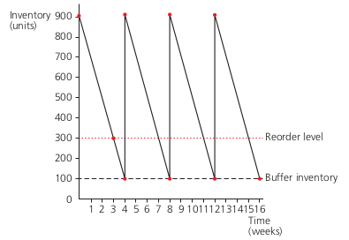

Operations management
The nature of operations
Operations management oversees the planning, co-ordination and control of the transformation process, turning resources into outputs.
- There are many different transformation process:
- Changing characteristics of materials, information, or customers.
- Changing the location of materials and information.
- Changing the ownership of materials.
-
The effectiveness of a business depends a great deal on the quality and cost of operations process.
- Effective operations:
- means the business is doing right thing
- means the business is doing what it does at a low cost
- leads to more sales and profits
-
Output of a business is the total amount produced in a given time period.
- Operations will involve management of its factors of production: Land, labour, capital and enterprise.
Stages of the transformation process
- The operations process involves different stages including:
- Producing the initial idea, prototyping and testing
- designing the best method of production
- Deciding on levels of inventory which should be held
- Ensuring production goes according to plan
- Delivering to next stage in the process
- Handling recall of products if necessary
Efficiency, effeectiveness, productivity and sustainability
-
Effectiveness refers to degree to which operation is successful in producing desired result.
-
Efficiency refers to ability to accomplish a task with the minimum expenditure of time and resources.
-
Productivity is one measure efficiency that measures the output relative to inputs used.
-
Sustainability refers to ability to maintain or improve the performance of operations over the long term.
Labor productivity
-
Labor productivity specifically measures the output per person.
- Techniques:
- Increasing number of hours worked.
- Training.
- Investment in equipment and technology.
- Changing the way work is done.
- Motivating employees.
- Employees resist to higher productivity because:
- they don’t want to work longer or harder
- they don’t want to learn new skills
- they fear that higher productivity levels may lead to job losses
- they feel it is unfair that they are producing more unless they receive higher rewards
Sustainability
- Becoming sustainable involves:
- Using resources that are not being used, such as recycled materials
- Using fewer resources generally
- Recyling and reusing resources more
- Reducing negative impact of business’ activities on the environment.
- Implication on business:
- Need to reconsider what is produced
- Need to reconsider how products are produced
- Need to reconsider packaging.
- Benefits:
- Good for environment and society
- may attract customers, employees and investors
- may avoid negative comment in the media
- may be mandated by law now or in future
Capital-intensive and labour-intensive operations
Capital intensive operations involve a relatively large proportion of machinery and equipment relative to other resources. For eg: car manufacturing, oil refining etc.
- Advantages:
- Can produce high volumes
- Output can be standardised and consistent
- May be able to produce continuously
- Disadvantages:
- Can be expensive to set up
- High fixed costs increasing break-even output
- Can be difficult to customise products to individual customer needs
Labor intensive operations involve a relatively high proportion of people compared to other resources.
- Advantages:
- Production may be flexible to customer needs
- Less expensive to set up than buying equipment
- Employees can use skills and initiative to be creative
- Disadvantages:
- May take time to train staff with necessary skills
- Product may vary in consistency and quality
- Volumes produced may be low
Operations methods
- There are different types of operation methods. Some are:
- Job production: one-off, unique, tailor-made items
- Batch production: Items move as a group from one stage of the process to another
- Flow production: Items move continuously from one stage of the production process to another
- Mass customisation: Large-scale production with the flexibility to produce a number of different models
Changing from job to batch to mass production will depend on the nature of demand and will require investement in capital equipment.
Inventory management
Inventory refers to the stocks/product held in a business, such as materials and semi-finished goods.
Inventory refers to products that the business owns but will use up during the operations process.
Managing inventory
Types of inventory include: - Raw materials - Work in progress(semi-finished goods) - Finished products - General supplies
- Costs of holding inventory:
- Costs of storage
- Opportunity cost
- Security costs
- Risk of depriciation
The benefits of holding inventory are that you have products ready when you need them, and if there are any delays or breakdowns in the process you can continue to operate.
Inventory(stock) control charts
Inventory control charts can highlight how much inventory is being used up, how much to reorder and when.

- Buffer inventory is the minimum amount of inventory a business wants to hold just in case of problems.
- The lead time is how long it takes from ordering the supplies from a supplier to them arriving at the business.
- The reorder level is the amount of inventory left at which a business needs to place an order so that the new inventories arrive before the business goes below its buffer level.
- The reorder quantity is the amount ordered each time.
Inventory control requires decision on how much inventory to hold which requires trade-off between the costs of holding the inventory and the problems that might occur if inventory is not held.
- Buffer inventory depends on:
- Rate at which inventory is generally used up
- Warehousing space available
- The nature of product
- Reliablity of suppliers
- Suppliers’ lead time
Effective inventory management involves making sure that the business does not have too much or too little inventory.
Supply chain management
Supply chain refers to all the different stages involved in making, distributing, and selling a good or service, beginning with the material through to the production of parts, through to the distribution and sale of the product.
Supply chain management involves managing the flow of goods and services, and includes the different processes that transform raw materials into final products.
- Effective supply chain management can lead to:
- Lower costs
- Fewer mistakes
- Greater co-ordination
- Better-quality supplies
- Less time between orders and delivery
Just in time
Unlike Just in case (JIC) approach in which businesses hold inventory just in case there are problems with suppliers or there is increase in demand, Just in Time(JIT) approach involves producing only when they know they can actually sell the items.
- Advantages:
- Flexibility
- Reduced costs
- Waste minimization/Lean production
- Disadvantages:
- Requires reliable suppliers and availability
- Firm is vulnerable to action taken by employees
- Extra reordering
- Problems if suppliers fail to deliver on time
- Running a JIT system requires:
- Excellent relationships with suppliers
- Reliable employees
- A flexible workforce
- Introducting a JIT production involves:
- investment in machinery which is flexible
- training multi-skilled employees
- change in employees contract
- building relationships with suppliers who can produce just in time as well.
Capacity utilisation and outsourcing
Capacity is the maximum amount of output a firm can produce at a given moment with its existing resources and it depends on the number and quality of its factors of production.
Capacity utilisation measures the existing output relative to the maximum.
-
Higher levels of capacity utilisation are desirable because they spread the fixed costs of a business over more units.
- Methods of improving capacity utilisation are:
- do nothing: if this is temporary issue
- renew its marketing activities to boost demands
- reduce the level of capacity: Rationalisation
- subcontract for other firms
- If levels of demand relative to capacity is high, a firm can:
- Start a waiting list
- increase prices
- If there is capacity shortage:
- do nothing
- expand capacity
- outsource
Outsourcing
Outsourcing occurs when the business uses other producers to undertake some of its operations
- It enables a business to:
- use the specialist services of other business
- benefit from lower costs
- increase capacity
- When outsourcing, a business should consider:
- the impact on costs
- the impact on quality
- reliability of delivery
- the response of the existing workforce